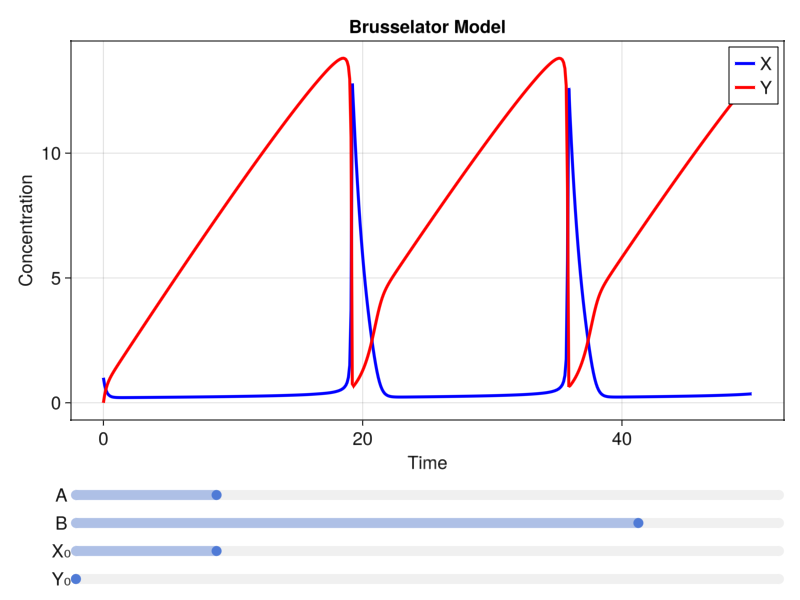

Interactive Simulation and Plotting
Catalyst can utilize the GLMakie.jl package for creating interactive visualizations of your reaction network dynamics. This tutorial provides a step-by-step guide to creating an interactive visualization of the Brusselator model, building upon the basic Brusselator example.
Setting up the Brusselator model
Let's again use the oscillating Brusselator model, extending the basic simulation plotting workflow we saw earlier.
using Catalyst
using OrdinaryDiffEqTsit5using GLMakie# Define the Brusselator model
brusselator = @reaction_network begin
A, ∅ → X
1, 2X + Y → 3X
B, X → Y
1, X → ∅
end
# Initial parameter values and conditions
p = [:A => 1.0, :B => 4.0]
u0 = [:X => 1.0, :Y => 0.0]
tspan = (0.0, 50.0)
oprob = ODEProblem(brusselator, u0, tspan, p)
# Function to solve the ODE
function solve_brusselator(A, B, X0, Y0, prob = oprob)
p = [:A => A, :B => B]
u0 = [:X => X0, :Y => Y0]
newprob = remake(prob, p=p, u0=u0)
solve(newprob, Tsit5(), saveat = 0.1)
endsolve_brusselator (generic function with 2 methods)This code sets up our Brusselator model using Catalyst.jl's @reaction_network macro. We also define initial parameters, initial conditions, create an ODEProblem, and define a function to solve the ODE with given parameters. Setting saveat = 0.1 in the call to solve ensures the solution is saved with the desired temporal frequency we want for our later plots.
Be sure to set saveat to a value that is appropriate for your system; otherwise, the size of the solution can change during interactivity, which will cause dimension mismatch errors once we add our interactive elements.
Basic static plotting
Let's start by creating a basic plot of our Brusselator model:
# Create the main figure
fig = Figure(size = (800, 600), fontsize = 18);
# Create an axis for the plot
ax = Axis(fig[1, 1],
title = "Brusselator Model",
xlabel = "Time",
ylabel = "Concentration")
# Solve the ODE
sol = solve_brusselator(1.0, 4.0, 1.0, 0.0)
# Plot the solution
lines!(ax, sol.t, sol[:X], label = "X", color = :blue, linewidth = 3)
lines!(ax, sol.t, sol[:Y], label = "Y", color = :red, linewidth = 3)
# Add a legend
axislegend(ax, position = :rt)
# Display the figure
figThe plot shows the concentrations of species X and Y over time. Notice the oscillatory behavior characteristic of the Brusselator model.
Adding interactivity
Now, let's add interactivity to our plot using Observables and sliders. We'll build this up step by step.
Creating Observables
Observables are a key concept in reactive programming and are central to how Makie.jl creates interactive visualizations. You can read more about them here.
# Create observables for parameters and initial conditions
A = Observable(1.0)
B = Observable(4.0)
X0 = Observable(1.0)
Y0 = Observable(0.0)An Observable is a container for a value that can change over time. When the value changes, any dependent computations are automatically updated.
Adding sliders and connecting to Observables
Let's add sliders that will control our Observables:
# Create the main figure
fig = Figure(size = (800, 600), fontsize = 18);
# Create layout for plot and sliders
plot_layout = fig[1, 1] = GridLayout()
slider_layout = fig[2, 1] = GridLayout()
# Create sliders
slider_A = Slider(slider_layout[1, 1], range = 0.0:0.01:5.0, startvalue = to_value(A)) # to_value(A) unwraps the Observable to a value
slider_B = Slider(slider_layout[2, 1], range = 0.0:0.01:5.0, startvalue = to_value(B))
slider_X0 = Slider(slider_layout[3, 1], range = 0.0:0.01:5.0, startvalue = to_value(X0))
slider_Y0 = Slider(slider_layout[4, 1], range = 0.0:0.01:5.0, startvalue = to_value(Y0))
# Add labels for sliders
Label(slider_layout[1, 1, Left()], "A")
Label(slider_layout[2, 1, Left()], "B")
Label(slider_layout[3, 1, Left()], "X₀")
Label(slider_layout[4, 1, Left()], "Y₀")
# Connect the values of the sliders to the observables
connect!(A, slider_A.value)
connect!(B, slider_B.value)
connect!(X0, slider_X0.value)
connect!(Y0, slider_Y0.value)These sliders allow us to interactively change the parameters A and B, as well as the initial conditions X₀ and Y₀.
Creating a reactive plot
Now, let's create a plot that reacts to changes in our sliders:
# Create an axis for the plot
ax = Axis(plot_layout[1, 1],
title = "Brusselator Model",
xlabel = "Time",
ylabel = "Concentration")
# Create an observable for the solution
# The `@lift` macro is used to create an Observable that depends on the observables `A`, `B`, `X0`, and `Y0`, and automatically updates when any of these observables change
solution = @lift(solve_brusselator($A, $B, $X0, $Y0))
# Plot the solution
# We don't use the ODESolution plot recipe here, as you've seen in the previous examples where only the solution and an `idxs` argument was passed to the plot method, because we are passing in an Observable wrapping the solution
lines!(ax, lift(sol -> sol.t, solution), lift(sol -> sol[:X], solution), label = "X", color = :blue, linewidth = 3) # `lift` can either be used as a function or a macro
lines!(ax, lift(sol -> sol.t, solution), lift(sol -> sol[:Y], solution), label = "Y", color = :red, linewidth = 3)
# Add a legend
axislegend(ax, position = :rt)
# Display the figure
fig
This plot will now update in real-time as you move the sliders, allowing for interactive exploration of the Brusselator's behavior under different conditions. (Note the figure above is not interactive, but for illustrative purposes to show what you should see locally.)
Adding a phase plot
To gain more insight into the system's behavior, let's enhance our visualization by adding a phase plot, along with some other improvements:
# Create the main figure
fig = Figure(size = (1200, 800), fontsize = 18);
# Create main layout: plots on top, sliders at bottom
plot_grid = fig[1, 1] = GridLayout()
slider_grid = fig[2, 1] = GridLayout()
# Create sub-grids for plots
time_plot = plot_grid[1, 1] = GridLayout()
phase_plot = plot_grid[1, 2] = GridLayout()
# Create axes for the time series plot and phase plot
ax_time = Axis(time_plot[1, 1],
title = "Brusselator Model - Time Series",
xlabel = "Time",
ylabel = "Concentration")
ax_phase = Axis(phase_plot[1, 1],
title = "Brusselator Model - Phase Plot",
xlabel = "X",
ylabel = "Y")
# Create sub-grids for sliders
param_grid = slider_grid[1, 1] = GridLayout()
ic_grid = slider_grid[1, 2] = GridLayout()
# Create observables for parameters and initial conditions
A = Observable{Float64}(1.0) # We can specify the type of the Observable value, which can help with type stability and performance
B = Observable{Float64}(4.0)
X0 = Observable{Float64}(1.0)
Y0 = Observable{Float64}(0.0)
# Create sliders with labels and group titles
Label(param_grid[1, 1:2], "Parameters", fontsize = 22)
slider_A = Slider(param_grid[2, 2], range = 0.0:0.01:5.0, startvalue = to_value(A))
slider_B = Slider(param_grid[3, 2], range = 0.0:0.01:5.0, startvalue = to_value(B))
Label(param_grid[2, 1], "A")
Label(param_grid[3, 1], "B")
Label(ic_grid[1, 1:2], "Initial Conditions", fontsize = 22)
slider_X0 = Slider(ic_grid[2, 2], range = 0.0:0.01:5.0, startvalue = to_value(X0))
slider_Y0 = Slider(ic_grid[3, 2], range = 0.0:0.01:5.0, startvalue = to_value(Y0))
Label(ic_grid[2, 1], "X₀")
Label(ic_grid[3, 1], "Y₀")
# Connect sliders to observables
connect!(A, slider_A.value)
connect!(B, slider_B.value)
connect!(X0, slider_X0.value)
connect!(Y0, slider_Y0.value)
# Create an observable for the solution.
solution = @lift(solve_brusselator($A, $B, $X0, $Y0))
# Plot the time series
lines!(ax_time, lift(sol -> sol.t, solution), lift(sol -> sol[:X], solution), label = "X", color = :blue, linewidth = 3)
lines!(ax_time, lift(sol -> sol.t, solution), lift(sol -> sol[:Y], solution), label = "Y", color = :red, linewidth = 3)
# Plot the phase plot
phase_plot_obj = lines!(ax_phase, lift(sol -> sol[:X], solution), lift(sol -> sol[:Y], solution),
color = lift(sol -> sol.t, solution), colormap = :viridis)
# Add a colorbar for the phase plot
Colorbar(phase_plot[1, 2], phase_plot_obj, label = "Time")
# Add legends
axislegend(ax_time, position = :rt)
# Adjust layout to your liking
colgap!(plot_grid, 20)
rowgap!(fig.layout, 20)
colgap!(param_grid, 10)
colgap!(ic_grid, 10)
# Display the figure
figThis will create a visualization with both time series and phase plots:
Common plotting options
Various plotting options can be provided as optional arguments to the lines! command. Common options include:
linewidthorlw: Determine plot line widths.linestyle: Determines plot line style.color: Determines the line colors.label: Determines label texts displayed in the legend.
For example:
lines!(ax_time, lift(sol -> sol.t, solution), lift(sol -> sol[:X], solution),
label = "X", color = :green, linewidth = 2, linestyle = :dash)Extending the interactive visualization
You can further extend this visualization by:
- Adding other interactive elements, such as buttons or dropdown menus to control different aspects of the simulation or visualization.
- Adding additonal axes to the plot, such as plotting the derivatives of the species.
- Color coding the slider and slider labels to match the plot colors.